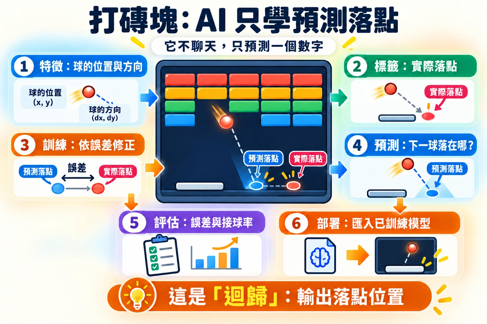
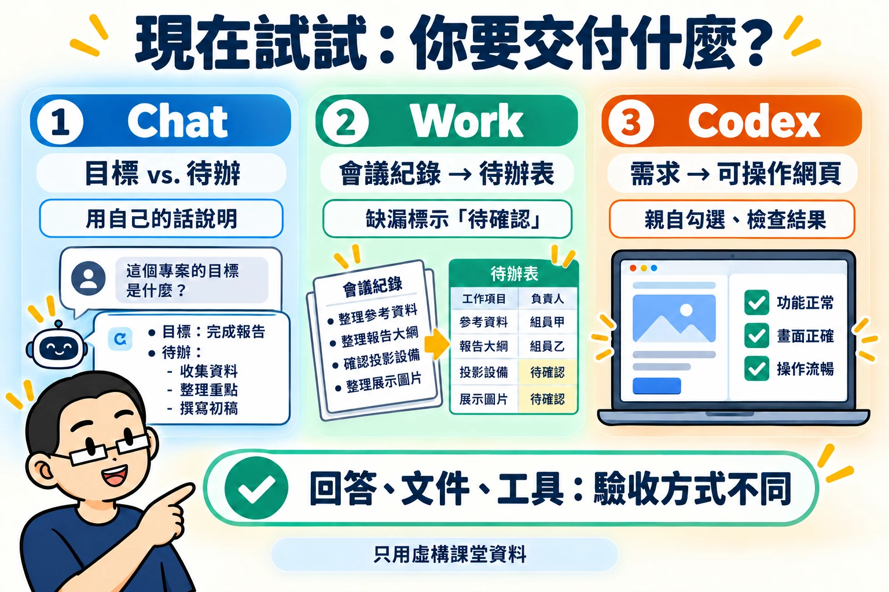
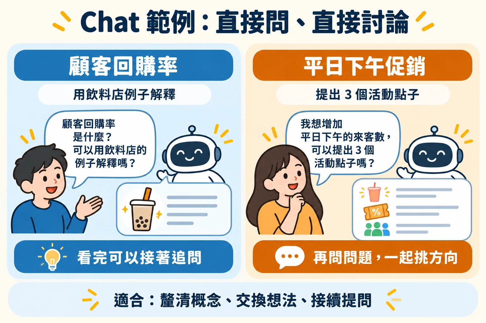
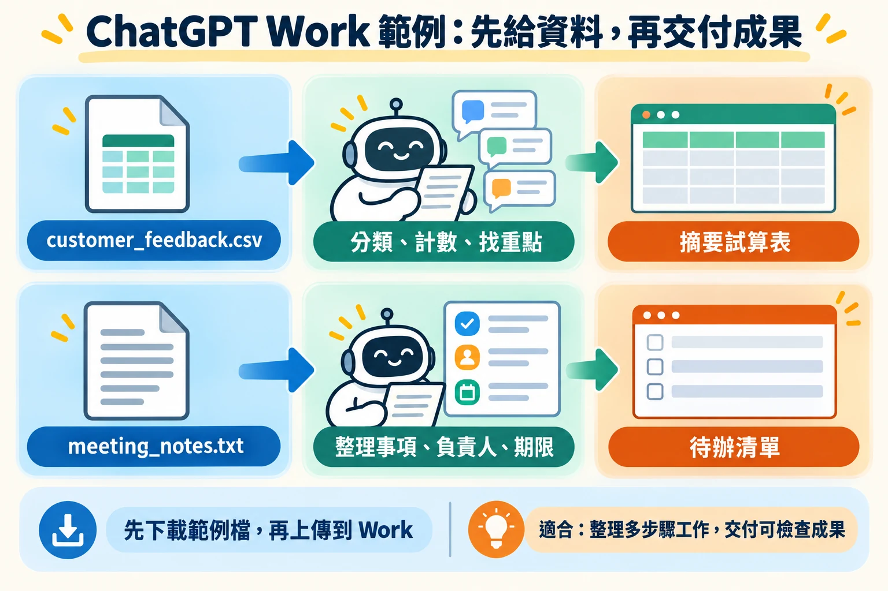
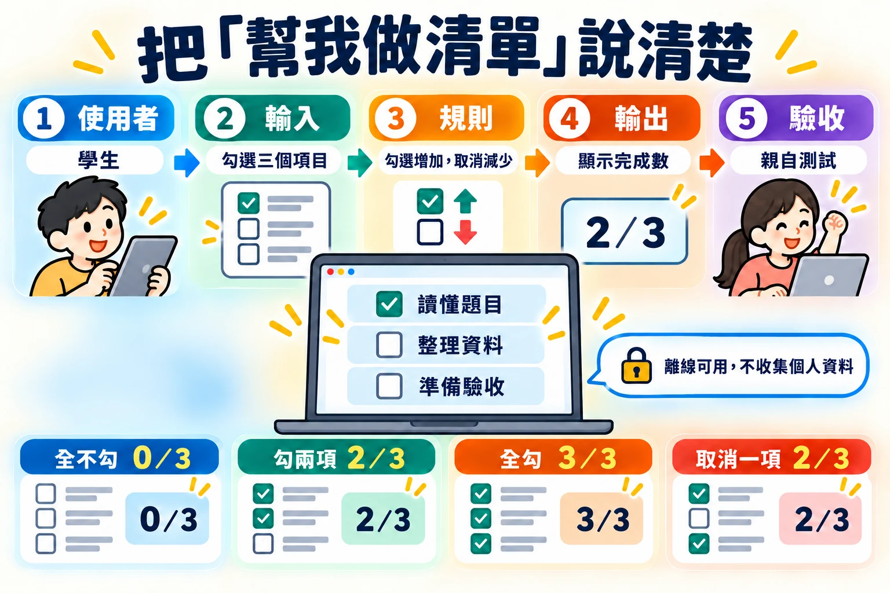
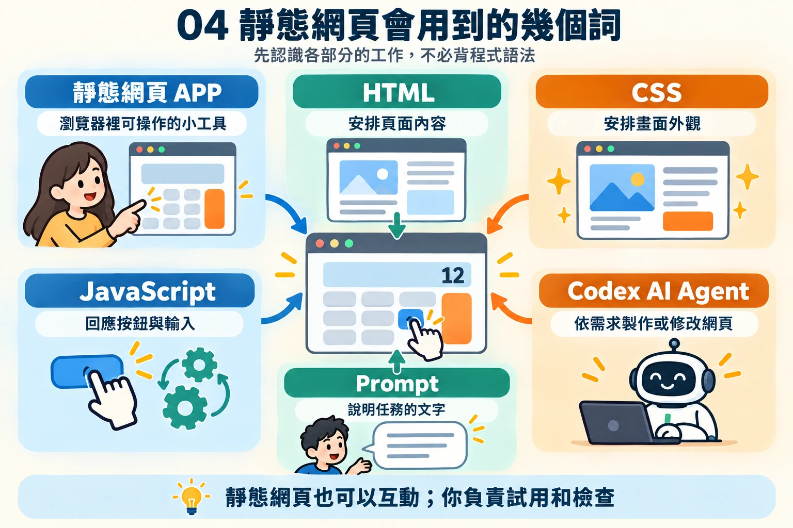

AI 與 AI Agent 入門
從 AI 到 AI Agent 應用
先回顧 ChatGPT 出現之前就已經在身邊的 AI（機器學習與辨別式 AI），再認識生成式 AI 與 Chat、Work、Codex 三種工作角色，再用小組報告與準備清單的通用情境練習交辦。你不必先會寫程式，但要能說清楚需求、核對資料，並判斷成果是否正確。
南臺科技大學商管學院 · AI Agent 實作講義 · 單元 01
姓名：________________ 班級：________________ 日期：________________
能分辨「我要一個回答」、「我要整理好的成果」與「我要可操作的工具」；能寫出使用者、輸入、規則、輸出與驗收條件。先完成一個 Chat 練習與需求表，Work 練習可以接著試用或課後練習。
01ChatGPT 之前的 AI：機器學習與辨別式 AI

2022 年底 ChatGPT 推出後，「AI」幾乎成了「會聊天、會寫東西的 AI」的代名詞。其實在那之前十多年，AI 早已在我們身邊工作：信箱自動把垃圾郵件分到另一個資料夾、銀行在你刷卡的瞬間判斷是不是盜刷、購物網站推薦「買了這件的人也買了…」、手機用臉部辨識解鎖。這些 AI 大多不會產生新內容，而是看了資料之後，給出一個判斷。這類 AI 稱為辨別式 AI（Discriminative AI），背後的方法就是機器學習。
機器學習：讓電腦從例子中找出規則
傳統的程式由人把規則一條條寫出來，例如「單筆消費超過 5 萬元就發出警示」。但真實世界的規則常常太多、太細，人寫不完。機器學習換一個做法：準備大量「過去的例子＋當時的正確答案」，讓電腦自己反覆調整，找出能預測答案的規則。學好的規則稱為模型。
- ① 收集資料過去的交易、顧客紀錄、照片等例子
- ② 標上答案每個例子的結果：是不是盜刷、有沒有回購
- ③ 訓練模型電腦反覆比對「猜的」和「正確答案」，逐步修正
- ④ 預測新資料遇到新的例子時，給出判斷
- ⑤ 檢驗成效用沒看過的資料計算準確率或誤差
辨別式 AI 與生成式 AI 有什麼不同
兩者都用機器學習訓練，差別在於要回答的問題和交出的成果。辨別式 AI 回答「這是哪一類？」或「會是多少？」；生成式 AI 則依照指示產生新的文字、圖片或程式。
| 比較重點 | 辨別式 AI（ChatGPT 之前的主流） | 生成式 AI（例如 ChatGPT） |
|---|---|---|
| 回答的問題 | 「這筆交易是不是盜刷？」「下週會賣幾杯？」 | 「幫我寫一段促銷文案」「把會議紀錄整理成待辦清單」 |
| 輸出 | 一個類別、分數或數字 | 一段新的文字、圖片、表格或程式 |
| 常見商管應用 | 盜刷偵測、顧客流失預測、需求預測、信用評分、商品推薦、瑕疵檢測 | 文案草稿、資料整理、報告摘要、製作網頁工具 |
| 怎麼判斷好壞 | 和正確答案比對，計算準確率或誤差 | 多半沒有唯一答案，需要人判斷內容是否正確、合用 |
| 能做的事 | 通常只會一件事：訓練它回答的那個問題 | 同一個模型可以處理許多不同的任務 |
判斷屬於哪一類
這封信是不是垃圾郵件？這位顧客下個月會不會流失？這筆貸款申請風險高或低？
預測一個數字
下週門市會賣出幾杯飲料？這間房子大約值多少錢？顧客要排隊等幾分鐘？
替選項排序
這位顧客最可能點開哪幾樣商品？首頁該先放哪些優惠？

用打磚塊遊戲看辨別式 AI 怎麼學
下面的打磚塊遊戲有兩種模式：手動由你控制球拍；電腦（機器學習）則交給一個小型神經網路。這個神經網路只學一件事：看到球目前的位置和方向，預測球會落在哪裡。輸出是一個數字（落點的橫向位置），所以它是一個做「迴歸」的辨別式 AI。它不會聊天，也不會產生新內容，但會越玩越準。
遊戲中的每個元素，都能對應到機器學習的名詞，也能對應到商管情境：
| 遊戲中看到的 | 機器學習的說法 | 換成商管情境（預測顧客會不會回購） |
|---|---|---|
| 球的位置 x、y 與方向 dx、dy | 特徵（Feature）：模型用來判斷的輸入資料 | 最近一次消費距今幾天、過去三個月消費次數、平均客單價 |
| 球實際落下的位置 | 標籤（Label）：正確答案 | 這位顧客最後有沒有再回來消費 |
| 每一次球落下 | 一筆訓練資料 | 一位顧客的一筆歷史紀錄 |
| 「梯度更新次數」持續增加 | 訓練：依照猜錯的程度調整模型 | 用歷史資料建立回購預測模型 |
| 藍色三角形（預測落點） | 預測（Prediction） | 模型對新顧客算出的回購可能性 |
| 預測誤差圖、AI 接球率 | 模型評估：準不準？ | 預測名單中，實際回購的比例有多少 |
| 儲存、匯出、匯入模型 | 部署：把訓練好的模型拿去使用 | 把模型放進會員系統，每天自動找出可能流失的顧客 |
這個遊戲裡的答案不需要人工標記：球落下時，遊戲本身就知道正確落點，模型可以立刻拿來學習。真實的商管資料通常沒有這麼方便，標上答案往往是最花時間的步驟。
開啟遊戲，點選「電腦（機器學習）」，再按「重置模型」。剛開始模型的參數是隨機的，球拍幾乎接不到球。
把「遊戲速度」拉到 16× 左右，觀察「誤差中位數」和「AI 接球率」。誤差圖上的紅點（接不到）會逐漸被藍點（接得到）取代：資料越多，模型越準。
按「重置模型」後改按「預先訓練 2,000 球」，模型一次看完 2,000 球的資料再上場，比較它和邊玩邊學的差別。
切回「手動」模式自己玩一會兒。你打出的每一球也會成為訓練資料，再切回電腦模式看看它學到什麼。
按「匯入檔案…」，選擇剛才下載的已訓練模型。電腦模式會立刻變得很準：這就是把訓練好的模型部署出去使用。
它只會被訓練的那一件事。遊戲中的模型只學過「球往下掉時會落在哪裡」，所以球往上飛時，球拍只會回到中間等待；它也不會告訴你為什麼這樣判斷。同樣地，盜刷偵測模型不會幫你寫信給客戶，需求預測模型遇到從沒發生過的情況（例如突然爆紅的新品）也可能失準。模型的品質取決於資料：資料太少、太舊或有偏差，預測就不可靠。
ChatGPT 這類生成式 AI 也是用機器學習訓練出來的，只是它學的問題換成了「接下來最適合出現的文字是什麼」，並且用了大量文字資料。學會了這件事，同一個模型就能回答問題、整理資料、寫程式。下一節先看一個 2026 年的新例子，第 03 節再把這些 AI 使用方式放在一起比較。
02新趨勢：Jev，只做判斷的新一代 AI

2026 年 9 月，新創公司 TypeSafe AI 結束隱形期，宣布募得 4,000 萬美元種子資金，並發表第一個產品 Jev。執行長兼共同創辦人 Diogo Almeida 曾是 OpenAI 研究員，參與 ChatGPT 與 GPT-4 的研發。TypeSafe 把 Jev 稱為一種新的模型類別：System One Model。這個名稱借自心理學家康納曼（Daniel Kahneman）的說法：System 1 是快速、直覺的判斷，System 2 是緩慢、仔細的推理。Jev 不聊天、不寫文章，專門做快速的判斷，而且是給其他軟體呼叫使用的。
Jev 怎麼運作：先給選項，再回傳機率
軟體把一段「情況說明」和幾個問題一起交給 Jev，並事先限定可以接受的答案。Jev 不會寫出一段文字，而是回傳每個答案的機率，以及它對這次判斷的信心程度。官方提供三種題型：
回答是或否
回傳「這句話成立」的機率。例如：這張發票是否需要人工審核？
從選項中挑一個
每個選項各有一個機率。例如：這則客服訊息屬於退貨、運送還是付款問題？
在等級上評分
在「低、中、高」這類等級上給分數。例如：這則顧客抱怨的緊急程度是低、中還是高？
因為每個答案都附有機率，使用 Jev 的系統可以設定門檻：信心夠高就自動處理，信心不夠就再查資料，或轉給人工判斷。官方舉的應用都是企業的大量重複流程，例如客服案件分類、發票審核、資安警示分級，以及檢查 AI Agent 的工作成果。
Jev、辨別式 AI 與生成式 AI 比一比
| 比較重點 | 傳統機器學習（辨別式 AI） | Jev（System One Model） | 生成式 AI（例如 ChatGPT） |
|---|---|---|---|
| 回答的問題 | 訓練時就決定好的一個問題 | 每次由軟體提出問題，答案限定在給定的選項內 | 幾乎任何問題或指令 |
| 輸入 | 整理好的數字或類別欄位（特徵） | 一段情況說明（例如一則訊息、一張單據的內容）加上問題與選項 | 自由的文字、圖片或檔案 |
| 輸出 | 類別、機率或數字 | 各選項的機率、是非機率或量表分數，並附信心程度 | 新產生的文字、圖片或程式 |
| 換一個新問題 | 要重新收集、標註資料，再訓練一個新模型 | 依官方說明，改寫問題與選項即可，不必重新訓練 | 改寫提示即可 |
| 速度 | 很快 | 官方宣稱不到 1 秒（數十到數百毫秒） | 較慢，複雜問題常需數秒以上 |
| 怎麼使用 | 嵌在系統裡自動運作 | 由程式或 AI Agent 呼叫，結果交給下一個步驟 | 人直接對話，或由 AI Agent 使用 |
| 怎麼判斷好壞 | 和正確答案比對，計算準確率 | 除了準確率，還要看機率是否可信：說「八成把握」的判斷，實際上是否約八成正確 | 多半沒有唯一答案，需要人判斷 |
簡單地說：Jev 的輸出形式像辨別式 AI（只給判斷和機率），理解能力則來自大型語言模型（看得懂一段文字描述的情況，換問題不必重新訓練）。
用打磚塊遊戲來想 Jev
第 01 節打磚塊遊戲裡的神經網路，只會回答「球會落在哪裡」。如果想問它「這一球會不會漏接？」，就得重新設計輸出、重新收集資料、重新訓練，這就是傳統機器學習「一個模型只做一件事」的特性。Jev 的想法則是：準備一個通用的判斷模型，每次換一個問題和一組選項來問它。另外，遊戲中的模型只給出一個落點，沒有說自己有多少把握；Jev 會附上信心程度，讓系統決定什麼時候交給人處理。
Jev 目前只開放候補名單的開發者試用。速度、成本與判斷品質，都是公司自行公布的測試結果，尚待第三方驗證。看到新產品的宣傳數字時，先把它當成公司的「主張」，而不是已經證實的「事實」。
AI 的發展不是「生成式 AI 取代辨別式 AI」。許多工作流程真正需要的，是快速、可以設定門檻的判斷。Jev 這類新模型，是把大型語言模型的理解能力，用「辨別式」的形式交付給軟體使用。
資料來源（整理於 2026 年 10 月）：SiliconANGLE、Business Wire 新聞稿、Width.ai 說明。
03不同 AI 使用方式，處理不同任務

生成式 AI 是能依照指示理解和產生文字、圖片或其他內容的技術。下表的名詞不是彼此完全分開的盒子；一個 Agent 可以使用生成式模型與推理能力，也可以透過對話接收你的要求。
| 概念 | 做什麼 | 商管情境 |
|---|---|---|
| 辨別式 AI／機器學習 | 依資料辨識、分類或預測。 | 預測下週門市會賣出幾杯飲料；預測結果仍須和實際銷量核對。 |
| 生成式 AI | 依要求產生文字、圖像或其他內容。 | 起草一段平日下午的促銷文案，再對照活動規則修改。 |
| Chatbot | 透過對話解釋、討論與追問。 | 問「目標與待辦事項有什麼不同？」 |
| 推理模型 | 協助多步分析、比較與規劃。 | 逐步比較兩種折扣方案的售價，仍由你核對。 |
| AI Agent | 在授權範圍內讀取資料、操作工具並完成多步工作。 | 在指定資料夾讀取價格檔、建立試算網頁，再依測試結果修改。 |
名稱不是正確性的保證。回答得流暢、步驟很多或網頁很漂亮，都不能代替來源核對與實際操作。
用小遊戲看生成式 AI、推理與 AI Agent
第 01 節打磚塊遊戲裡的模型，每次只輸出一個數字。下面的小遊戲分成三關，用動畫說明上表中的生成式 AI、推理模型與 AI Agent：生成式 AI 怎麼產生回答、推理模式為什麼先想再答，以及 AI Agent 怎麼用工具把事情做完。遊戲中的例子是健康檢查數值和檢驗報告，重點是看懂 AI 的運作方式。
| 關卡 | 遊戲中看到的 | 要記住的事 |
|---|---|---|
| LV1 生成式 AI：一次接一個詞 | 迷你語言模型只學了 12 句檢驗數值的句子。它依前面的文字替每個可能的下一個詞算出機率，再一個詞一個詞接下去。溫度調高時，可能拼出「空腹血糖達到 38 °C 以上」這種通順卻錯誤的句子。 | 流暢不等於正確。Chatbot 的回答也是這樣產生的，數字和規則要對照來源（幻覺）。 |
| LV2 推理：先想，再回答 | 「直接回答」和「先推理再回答」比賽解計算題。推理的一方先寫出算式並驗算，花的時間較多。 | 計算折扣、換算單位這類多步驟問題，可以選用推理（思考）模式，但結果仍要自己手算核對。 |
| LV3 AI Agent：想 → 做 → 看 | Agent 反覆決定下一步、呼叫工具（讀檔、執行程式、寫檔、寄信）、查看結果；找不到檔案會換方法，寄信前先問人。 | Agent 在授權範圍內動手做事。工作範圍要設清楚，寄出、刪除這類收不回的動作由人確認。 |
在 LV1 選「電腦（自動生成）」，把溫度拉到 1.5 以上，看看哪些回答被標示「訓練資料裡沒有這一句」，再對照下方的訓練資料找出錯在哪裡。
在 LV2 先猜哪一邊會答對，再按「開始比賽」。三題都試試，比較簡單題和計算題的差別，並自己手算一次。
在 LV3 按「執行」，Agent 想寄信時選「不允許」，看它最後的回報有什麼不同；再切換到「Chat（只會回答）」比較。
04Chat、Work、Codex：依任務與成果選擇
ChatGPT 是使用 AI 的服務；其中的 Chat、Work 和 Codex，可以看成三種工作角色：Chat 是對話夥伴，Work 是處理完整任務的助理，Codex 是製作或修改數位工具的夥伴。這是幫助你交辦工作的分類，不表示每種工具只有一項能力。
Chat 與 Work 都可能處理檔案。差別不能只看有沒有上傳附件；要看你需要的是來回討論，還是依一份資料完成多個整理步驟並交付成品。功能是否能用，仍以你的帳號、權限與工具介面為準。
| 比較重點 | Chat | Work | Codex／其他 AI Agent |
|---|---|---|---|
| 主要工作 | 解釋、回答、一起想。 | 依提供的資料完成一項完整整理工作。 | 在專案中製作或修改網頁工具。 |
| 你交代什麼 | 想理解的問題，接著依回答追問。 | 資料來源、整理步驟與成品格式。 | 專案位置、使用者、操作、規則與驗收。 |
| 商管例子 | 用飲料店說明顧客回購率。 | 把匿名顧客意見或會議紀錄整理成摘要表、待辦表。 | 製作飲料折扣試算網頁。 |
| 成果長什麼樣子 | 你聽得懂的解釋與可繼續追問的回答。 | 能保存、繼續編輯的摘要、表格或試算表。 | 自己能開啟並操作的網頁與專案檔案。 |
| 你怎麼檢查 | 能否用自己的話說明，是否符合講義。 | 每列是否對得上來源，有無補造資料。 | 自己輸入數值、看結果、試錯填與邊界。 |
Chat：先理解，再追問
遇到不懂的名詞，可以先要一個簡單例子，再根據回答追問。你可以指定「只用這份講義」、「先不要講公式」，也可以指出哪一句仍不清楚。這種練習的成果主要留在對話中。
商管例子：請它用飲料店說明顧客回購率，接著追問「如果我只有一週的資料，能不能算？」它會跟著你的問題繼續解釋，不必先準備完整檔案。
Work：先提供材料，再交付整理成果
把 Work 想成接手一件較完整工作的助理：它先閱讀你的資料，再分類、整理、列出缺漏，最後交付一份你能保存的成品。你要明確說出來源與格式；資料沒有寫的事情，應標示待確認。
商管例子：把一份匿名顧客意見資料交給 Work，請它分類意見、計算各類筆數、整理主要發現，並產出摘要表。符合權限與方案時，桌面版 Work 也可在你授權後使用本機檔案或資料夾；雲端或網頁工作流程則可上傳檔案或下載成果。
Codex：在專案裡動手做出工具
把 Codex 想成製作夥伴。它能依需求建立或修改專案檔案；你不必先看懂程式碼，但要說清楚欄位、規則和正確答案。網頁做出來後，你要親自操作。也可以使用其他 AI Agent，重點是清楚交辦與保存可驗收的成果。
商管例子：請它製作飲料折扣試算網頁，讓店員輸入原價和折扣後看到售價。Codex 處理網頁背後的程式；你則檢查輸入方式、折扣計算和畫面說明是否符合店員的需求。
你負責商業情境、需求與驗收；AI 協助實作。遇到看不懂的內容，請它用一般用語說明改了哪些檔案、如何開啟、要測試什麼。不要因 AI 說「完成」就省略檢查。
05直接試用：回答、整理成果與小工具

練習 A：Chat 解釋一個學習概念
題目敘述 · Problem Statement
同學分不清「目標」與「待辦事項」。請用準備一次小組報告的例子釐清，不需要任何科系背景。
建議 Prompt · Suggested Prompt
我完全沒有寫程式的經驗。請用一般用語說明，一次帶我做一小步，不要要求我讀懂或手動修改程式。
這一步先不要建立任何檔案，回覆「了解」，等我提出需求。我在準備一次小組報告，想弄懂「目標」和「待辦事項」有什麼不同。例子是：完成清楚的報告；週三前整理三份參考資料。
請先用兩三句話解釋，再指出這兩句各屬於哪一種。最後問我一題，讓我用自己的話回答；如果我答錯，請換一個日常例子說明。這一步只要討論，不用做網頁。可能的 AI 回覆｜練習 A
以下只是參考，每次的字句與排列都可能不同；請用完成檢核判斷，而不是逐字比對。
（提示 1 之後）了解。
（提示 2 之後）
目標是你最後想達成的結果；待辦事項是為了達成目標要做的具體動作，通常會寫出期限或負責人。
「完成清楚的報告」是目標，因為它描述想要的成果。
「週三前整理三份參考資料」是待辦事項，因為它是具體行動，還有期限和數量。
換你試試：「製作五頁投影片」是目標，還是待辦事項？請用自己的話說明原因。預期成果 · Expected Outcome
回答區分想完成的成果與具體行動，並詢問哪一個是待辦事項。
完成檢核 · Check it
不看 AI 回答，自己說出：「完成清楚的報告是目標；週三前整理三份資料是待辦。」如果仍混淆，請它換一種說法，但保留相同數字。
練習 B：Chat 幫忙想測試方向
一份三項準備清單，勾選兩項與三項時應顯示不同結果。請 AI 幫忙說明為什麼兩種狀態都值得測，再自己核對。
我完全沒有寫程式的經驗。請用一般用語說明，一次帶我做一小步，不要要求我讀懂或手動修改程式。
這一步先不要建立任何檔案，回覆「了解」，等我提出需求。我想做一份準備清單，共有讀懂題目、整理資料、準備驗收三項。每勾一項，完成數就增加一項，顯示 0／3 到 3／3。
先不要製作網頁，請幫我列出「怎麼操作、應該看到什麼」的對照表：全不勾、勾兩項、三項全勾、取消其中一項。請說明為什麼每一種都值得試，最後問我還想檢查哪一種情況。可能的 AI 回覆｜練習 B
以下只是參考，每次的字句與排列都可能不同；請用完成檢核判斷，而不是逐字比對。
（提示 1 之後）了解。
（提示 2 之後）
怎麼操作｜應該看到什麼｜為什麼值得試
全部不勾｜0／3｜確認一開始就是零，沒有多算
勾兩項｜2／3｜確認部分完成時數字正確
三項全勾｜3／3｜確認全部完成時數字正確
從全勾取消一項｜2／3｜確認取消後數字會減少，不只會增加
想再確認一下：重新整理頁面後，你希望勾選還保留，還是回到 0／3？如果要保留，需要先說清楚。預期成果：勾選兩項 → 2／3，勾選三項 → 3／3。完成檢核：你能說出部分完成與全部完成的差別，並加測取消勾選後數量是否減少。
練習 C：Work 用提供的材料交付待辦表
題目敘述 · Problem Statement
你的小組有一段會議紀錄，希望整理成可保存的待辦表。下方就是全部來源；直接把紀錄與提示一起貼入工具即可。
小組會議紀錄（全部為虛構）
目標：完成一份讀書交流報告。
組員甲：整理三份參考資料，期限為討論前。
組員乙：整理報告大綱，期限尚未決定。
待辦：確認投影設備，尚未分配負責人。
待辦：整理成果展示圖片，尚未決定負責人與期限。建議 Prompt · Suggested Prompt
我完全沒有寫程式的經驗。請用一般用語說明，一次帶我做一小步，不要要求我讀懂或手動修改程式。
這一步先不要建立任何檔案，回覆「了解」，等我提出需求。請只根據上面的「小組會議紀錄」，整理成待辦表，欄位是工作項目、負責人、期限、待確認事項。
沒有寫明的負責人或期限請填「待確認」，不要替小組決定。最後列出還需要討論的事情。
先在對話中給我看表格，再保存成一份可下載、用一般文字編輯器就能閱讀的文件。請告訴我檔名、放在哪裡、怎麼開啟，不要只貼出程式或要求我自己轉檔。可能的 AI 回覆｜練習 C
以下只是參考，每次的字句與排列都可能不同；請用完成檢核判斷，而不是逐字比對。
（提示 1 之後）了解。
（提示 2 之後）
工作項目｜負責人｜期限｜待確認事項
整理三份參考資料｜組員甲｜討論前｜無
整理報告大綱｜組員乙｜待確認｜期限尚未決定
確認投影設備｜待確認｜待確認｜尚未分配負責人
整理成果展示圖片｜待確認｜待確認｜尚未決定負責人與期限
還需要討論：
（1）報告大綱什麼時候完成。
（2）投影設備由誰確認、何時確認。
（3）成果展示圖片由誰整理、何時完成。
已保存成文字檔「待辦表.txt」，放在目前的工作資料夾。在資料夾中雙擊這個檔案，就會用記事本或文字編輯器打開，內容與上面的表格相同。預期成果 · Expected Outcome
四個待辦工作：整理參考資料、整理大綱、確認設備、整理圖片。只有第一項有明確期限；第三與第四項的負責人都待確認。
完成檢核 · Check it
- 逐列找回來源句子，確認沒有新增來源未提到的任務。
- 未決定的資料沒有被填成虛構姓名或日期。
- 打開交付的文件，確定表格內容與對話中的版本一致。
練習 D：Codex 製作可操作成果
請 Codex 在指定資料夾做出練習 B 的準備清單網頁：三個勾選項目，並顯示完成數量。這與「請解釋工具怎麼做」不同：你要收到能開啟、能勾選、能再次修改的檔案。
先比較：對話回答、待辦文件、可操作網頁，這三種成果各要怎麼驗收？
可能的 AI 回覆｜練習 D
以下只是參考，每次的字句、檔名與外觀都可能不同；請親自打開網頁操作，用完成檢核判斷。
已在你指定的資料夾建立準備清單網頁，檔名是 index.html。
怎麼開啟：
（1）打開你指定的資料夾。
（2）雙擊 index.html，它會用瀏覽器開啟。
畫面上有三個勾選項目：讀懂題目、整理資料、準備驗收，下方顯示「已完成 0／3」。
我已經依照練習 B 的對照表試過：
全部不勾｜已完成 0／3
勾兩項｜已完成 2／3
三項全勾｜已完成 3／3，全部完成！
從全勾取消一項｜已完成 2／3
目前關閉或重新整理頁面後，勾選會回到 0／3。如果你希望保留勾選，請告訴我，我再幫你加上。可能的成果 · Possible Result
下面是一個可能做出來的網頁。打開後依練習 B 的四種情況親自勾選，看完成數是否相同。你的版本外觀可以不一樣，只要操作結果一致即可。
完成檢核 · Check it
- 能在資料夾找到檔案，雙擊後用瀏覽器開啟。
- 依序試全不勾、勾兩項、三項全勾、取消一項，完成數分別是 0／3、2／3、3／3、2／3。
- 不要只相信 AI 說「已測試」；以你自己操作看到的結果為準。
延伸試用：商管範例
完成練習 A 到 D 後，可以用下面的商管範例再試一次。先看它們要你提供什麼、最後要得到什麼，便能看出不同角色的用途。Work 與 Codex 範例會用到可下載的練習檔；先下載檔案，再貼上提示。
Chat 範例：直接問、直接討論

我想搞懂「顧客回購率」是什麼意思。你可以用一家飲料店當例子，簡單講給我聽嗎？先不要講公式或太專業的說法。講完之後問問我，看我還有哪裡想多了解。我想幫一家飲料店想個活動，讓學生平日下午願意來店裡。你先給我 3 個不一樣的方向，每個講一兩句就好。然後問我幾個問題，幫我一起挑出比較適合的那一個。Work 範例：先給資料，再交付整理成果

我剛上傳了「customer_feedback.csv」，裡面是匿名的顧客意見。可以幫我整理一下嗎？先把意見分成幾類，算算每一類有幾則，每類挑一則最有代表性的，再告訴我你看到哪些主要發現。分類和數量請幫我做成一份可以下載的試算表，另外附一段簡短摘要。只看檔案裡寫的內容就好，不要自己猜；不確定的地方跟我說一聲。我剛上傳了「meeting_notes.txt」，是一份會議紀錄。可以幫我整理成一份能下載的待辦清單嗎？每一項要寫出要做的事、誰負責、什麼時候要完成，還有目前進度。紀錄裡沒寫到的就標「待確認」，不要自己補。最後用幾句話告訴我，還有哪些事要大家一起決定。Codex 範例
先下載範例檔，並放進 Codex 正在處理的專案資料夾，再貼上提示。你不必打開或修改檔案內容。
我把「drink_prices.csv」放進你現在用的資料夾了，裡面是飲料的價格。可以幫我做一個「飲料折扣試算」的小工具嗎？要能直接用瀏覽器打開，畫面上列出每樣飲料的名稱、原價、折扣和打完折的價格。我也想自己輸入原價和折扣百分比，馬上算出價格。這只是練習用的，不要連到真的店家，也不要叫我另外安裝任何東西。做好之後，用一般人聽得懂的話告訴我你做了哪些東西、我要怎麼打開來試用就好，不用給我看你寫了什麼。練習時優先使用示範資料或去識別化資料。請 AI 整理出來的數字、分類和建議仍要對照來源確認；不要把未核實的分析直接當成營運或管理決策。
06把想法寫成清楚的需求
Prompt 就是你交給 AI Agent 的任務說明。描述得越清楚，越容易得到能試用的成果。開始前，先交代四件事：
- ① 目標製作自己的學習準備清單，避免漏掉需要完成的事情。
- ② 使用情境沒有程式背景的學生，在自己的筆電上練習與核對。
- ③ 預期成果標題、用途與項目清楚，勾選後顯示完成數量。
- ④ 完成條件與界線數量一致、取消勾選會更新、離線可用，不收集個人資料。
太簡略：「幫我做一個準備清單。」
更清楚：「請做一個給學生使用的準備清單網頁，提供讀懂題目、整理資料、準備驗收三個勾選項目，顯示完成數量。全不選是 0／3；選兩項是 2／3；取消勾選也要更新。在本機離線使用，不收集個人資料。」

題目敘述 · Problem Statement
你準備參加網頁工具實作。請先用 AI 對話釐清：誰會使用、輸入什麼、應得到什麼、怎樣確認正確。只討論虛構的練習例子。
建議 Prompt · Suggested Prompt
我完全沒有寫程式的經驗。請用一般用語說明，一次帶我做一小步，不要要求我讀懂或手動修改程式。
這一步先不要建立任何檔案，回覆「了解」，等我提出需求。我想做「學習準備清單」，項目是讀懂題目、整理資料、準備驗收。勾選後顯示已完成幾項；取消勾選後也要更新。
請先幫我整理一份五欄表：誰使用、怎麼操作、更新規則、畫面結果、如何確認。至少寫出全不勾、勾兩項、全勾三個例子和應有的完成數。
這一步先不要製作網頁。不增加登入、個人資料或其他功能。需要我補充時，請用簡單問題問我，不要假設我懂程式。可能的 AI 回覆｜需求表
以下只是參考，每次的字句與排列都可能不同；請用完成檢核判斷，而不是逐字比對。
（提示 1 之後）了解。
（提示 2 之後）
誰使用｜準備小組報告或課堂練習的人，在自己的筆電上使用
怎麼操作｜勾選或取消勾選三個項目：讀懂題目、整理資料、準備驗收
更新規則｜每勾一項，完成數加一；每取消一項，完成數減一
畫面結果｜清單下方顯示「已完成 幾／3」
如何確認｜依下面的例子親自操作，看完成數是否相同
確認例子：
全部不勾｜已完成 0／3
勾兩項｜已完成 2／3
三項全勾｜已完成 3／3
從全勾取消一項｜已完成 2／3
想請你補充一件事：關閉或重新整理頁面後，勾選要保留，還是回到 0／3？預期成果 · Expected Outcome
你得到一份五欄需求表：誰使用、怎麼操作、更新規則、畫面結果、如何確認。全不選是 0／3，選兩項是 2／3，全選是 3／3。
完成檢核 · Check it
- 能用自己的話說明這份需求，而不是只照貼 AI 的回答。
- 逐項對照自己的清單需求，找到一項未講清楚的要求並補上。
- 沒有增加需求未提到的功能或個人資料。
需求表只寫「正確計算」還不夠。把本題的至少三組操作與預期結果寫進去，AI 才能知道你如何確認「正確」。換成商管題目也一樣：例如補貨提醒，就寫出庫存低於、等於和高於安全庫存時，各應看到什麼。
07每個練習都走同樣的四個階段
不管你這一班做的是哪個題目，流程都一樣：
- ① 題目敘述知道誰要用、輸入什麼、要解決哪個小問題。
- ② 建議 Prompt把需求寫清楚，必要時依自己的情境改寫。
- ③ 預期成果先知道畫面應有什麼、每種操作應得到什麼結果。
- ④ 完成檢核親自操作，核對數字，記錄問題與修改後結果。
這些練習只使用虛構或示範資料。AI 起草的說明、整理的資料與建立的網頁，都要對照來源或手算檢查；涉及商業決策時，先用可信資料驗證，不要只因畫面看起來合理就直接採用。
讀懂情境 → 用自己的話描述 → 操作成果 → 依條件檢查。四個階段走完一次，比兩題都做一半更有收穫。這一單元結束前，留下你自己的五欄需求表。
08認識靜態網頁的幾個詞
準備好用 AI Agent 製作靜態網頁後，再認識下面這些詞。現在不必背程式語法；先知道每個部分大致負責什麼即可。

- 靜態網頁 APP
- 你的完成品。用瀏覽器直接開啟的小工具，可以顯示資料、計算價格或提醒補貨；不連接店家的正式系統。這裡的「靜態」不代表不能互動。
- HTML
- 網頁內容。決定頁面上有哪些東西，例如標題、商品資料、輸入欄位和按鈕。可以把它想成頁面的骨架。
- CSS
- 畫面外觀。安排顏色、字體、大小和位置，讓重要資訊容易看見、畫面容易使用。
- JavaScript
- 操作後的反應。讓頁面回應使用者的操作，例如按下按鈕後計算折扣價，或修改數量後更新庫存提醒。
- Prompt
- 需求說明。你交給 Codex 的文字：說明誰會用、要完成什麼、畫面要顯示什麼，以及怎樣才算做好。
- Codex AI Agent
- 協作夥伴。讀懂你的需求後，協助建立或修改網頁。你負責試用成果、確認是否符合需求，再說明要改進的地方。
記住這個順序就好：先說清楚想做的工具，再請 Codex 協助製作，接著親自操作和檢查。你不必先學會 HTML、CSS 或 JavaScript。